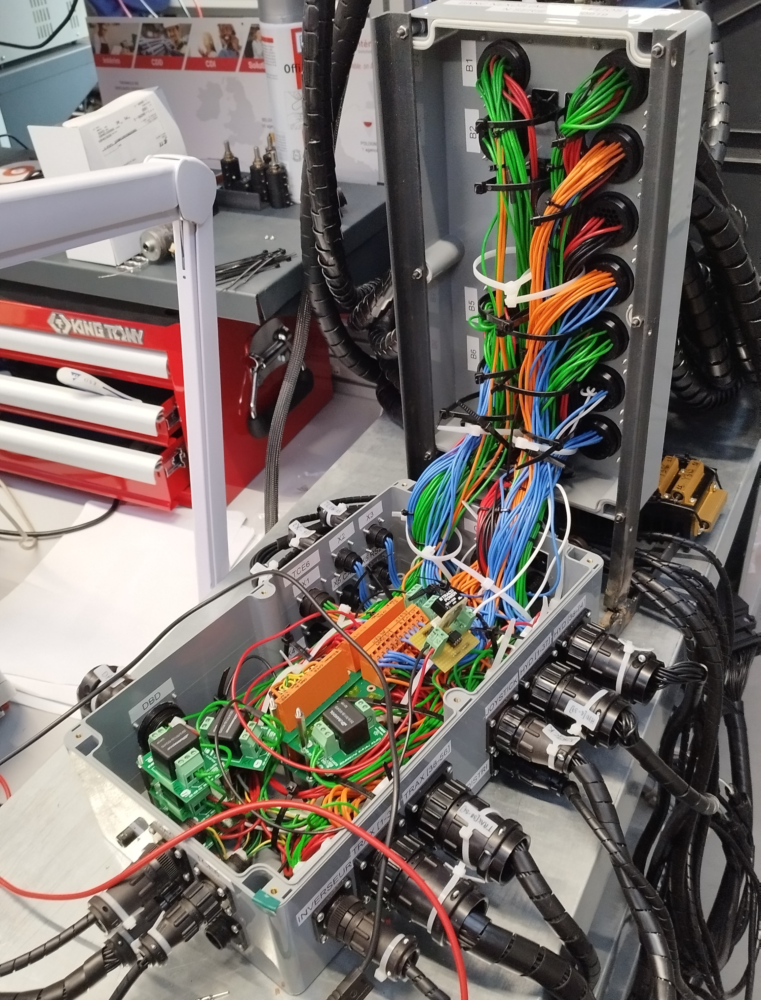

Compétence : Implanter
Conception d'un banc de test
Lors de mon alternance chez BREIZELEC, j’ai été chargé de concevoir et d’implanter un banc de test pour les tracteurs CLAAS Elios et Nexos. Ce système permet de simuler les capteurs et actionneurs du tracteur grâce à un BTU (Banc de Test Universel), afin de diagnostiquer les différents boîtiers électroniques embarqués

- Lecture de schémas électriques et exploitation de la documentation constructeur
- Câblage complet du banc de test (alimentation, connectique, signaux capteurs/actionneurs)
- Programmation de l’interface de test en Visual Basic
- Diagnostic de cartes électroniques et identification de pannes
- Brasure de composants (CMS et traversants)

Le banc couvre plusieurs modules critiques du tracteur : tableau de bord, boîtier de transmission, boîtier de relevage, et gestion des distributeurs hydrauliques. Ce projet m’a permis d’acquérir une expérience concrète en implantation de solutions techniques, en alliant électronique, câblage, programmation et test.